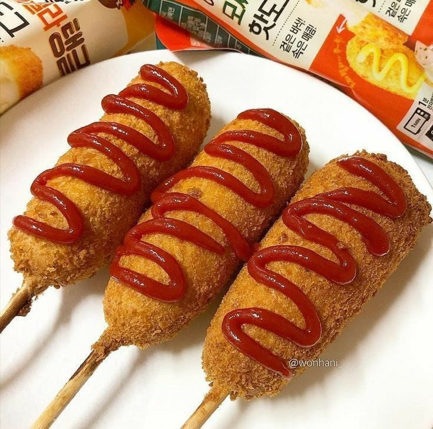
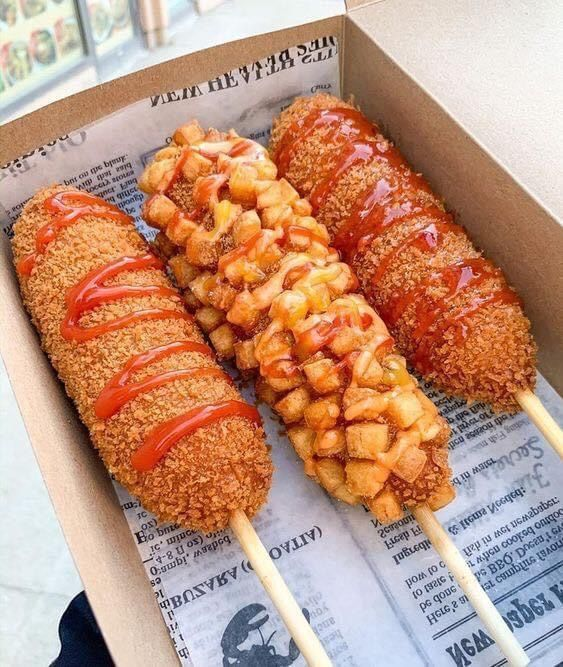
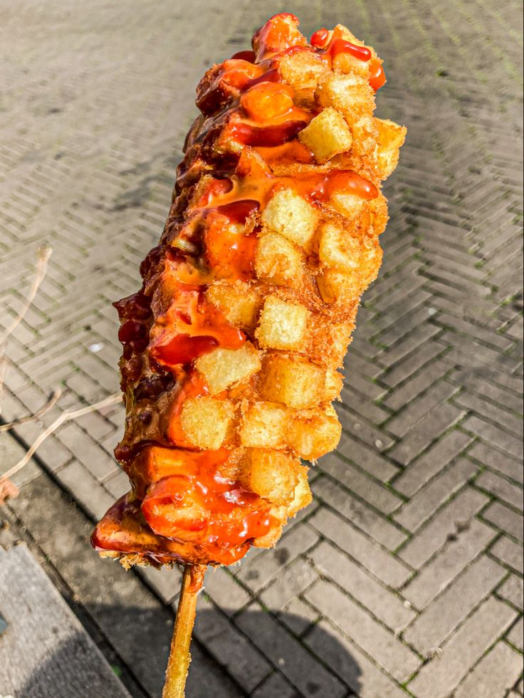
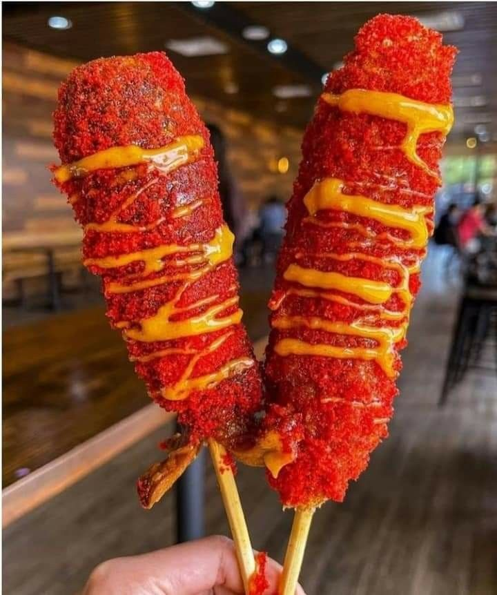

01

CLÁSICA
Cheese Classic
Masa suave, salchicha y queso fundido para el clásico que nunca falla.
Pedir ahora ↗Banderillas coreanas envueltas en una masa suave y fritas a la perfección. Clásicas, con papa crujiente o con Takis para llevar la textura a otro nivel.
Somos Corn Dog, un emprendimiento inspirado en la experiencia divertida y llena de textura de las banderillas coreanas. Nuestra propuesta combina una masa suavemente dulce con salchicha, queso y salsas para crear un antojo que se disfruta desde el primer mordisco.
Lo que nos diferencia está en los detalles: queso de alta calidad que se derrite por completo, coberturas crujientes y opciones para quienes buscan un extra de textura y sabor.

KOREANUna base, diferentes formas de hacerla irresistible.

Masa suave, salchicha y queso fundido para el clásico que nunca falla.
Pedir ahora ↗
Cubierta con cubos de papa crujiente para una mordida con más textura.
Pedir ahora ↗
Rebozado de Takis triturados con color intenso, limón y un toque de picor.
Pedir ahora ↗Preparamos nuestras banderillas con queso de alta calidad para lograr ese efecto visual divertido y delicioso que hace especial cada mordida.
Escríbenos y convierte el antojo en tu próxima banderilla.